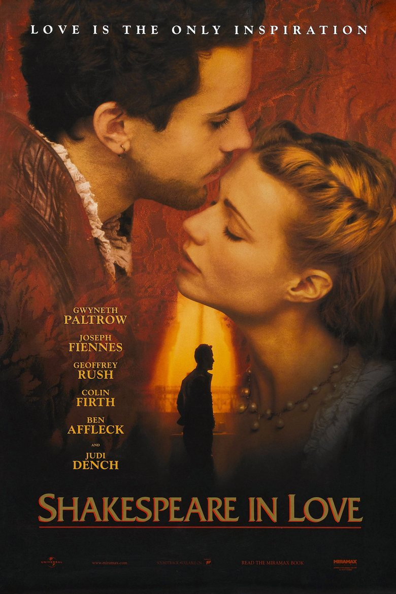

Shakespeare in Love: When Life Becomes a Play

Part of Curtain Up: Entering Shakespeare's World, after Hamlet and Macbeth.
Télécharger l'étude de film (version élève)
Shakespeare in Love, directed by John Madden in 1998 from a screenplay by Marc Norman and Tom Stoppard, won seven Oscars, including Best Picture. It takes us to London in 1593, where the plague has closed the theatres and rival companies fight for audiences. A young playwright called Will Shakespeare has run out of ideas: he has promised a comedy with a ridiculous title, Romeo and Ethel, the Pirate's Daughter, but he cannot write a single line.
Then Will meets Viola de Lesseps, a young noblewoman who dreams of acting. Since women were not allowed on stage at the time, she disguises herself as a young man, Thomas Kent, to audition. Will falls in love with her, but Viola is promised to Lord Wessex, a cold and greedy aristocrat, and their love is impossible. Keep in mind that this story is pure fiction. We know very little about Shakespeare's private life, and the screenwriters invented this romance to imagine where a masterpiece might come from.
The clever idea of the film is that Will writes his love story while he is living it. Little by little, the comedy about a pirate's daughter turns into a tragedy, Romeo and Juliet. The secret meetings, the balcony, the forbidden love and the separation all pass from Will and Viola's lives into the play, so that real life and the stage reflect each other until we no longer know which one is inventing the other.
More than four centuries later, Romeo and Juliet is still one of the most famous plays in the world, performed again and again and adapted into ballets, musicals, films and series. Two teenagers from enemy families, a love stronger than hatred and a death that brings peace: the story keeps working, generation after generation. The film shows its birth with all the chaos of a real theatre, from rehearsals and money problems to last-minute changes.
In Shakespeare in Love, everyone falls into the trap of the theatre. The actors forget their quarrels once they are on stage, the money lender who came to collect a debt ends up playing a part, the audience who came to laugh leaves in tears, and even Queen Elizabeth is caught in the game. Disguise, mistaken identity, secrets, dramatic irony and a last-minute twist work together perfectly. As Hamlet says, "the play's the thing" to catch the conscience of a king: the theatre is a machine built to capture us, and we love being captured.
Northrop Frye's keys apply here too. Romeo and Juliet are young and full of promise, at the top of the wheel, and their love breaks the order of two families. Isolated, they fall, and their death restores peace in Verona. Will and Viola must also accept that the rules of the world are stronger than their love, but the film offers them a final gift: their story survives in the play, and in a new heroine called Viola, in Twelfth Night.
While you watch, look for the mirror. Each time something happens to Will, ask yourself where it will appear in Romeo and Juliet, and each time the actors rehearse, notice how the theatre slowly takes over everyone's life, including yours.
- Thème
- Le théâtre de Shakespeare vu par le cinéma : Shakespeare in Love (John Madden, 1998) imagine la naissance de Romeo and Juliet dans le Londres de 1593, quand la vie de l'auteur devient une pièce.
- Niveau
- Anglais · Première et Terminale · lycée général et technologique. CECRL : Première, B1+ vers B2 ; Terminale LV1, B2 vers C1. Même niveau que Hamlet et Macbeth.
- Problématique
- How does Shakespeare in Love turn life into a play, and why do we enjoy being caught by the theatre?
- Objectifs
- Comprendre un film en anglais et en suivre l'intrigue (compréhension de l'oral). Décrire une affiche et raconter une scène (expression orale). Repérer les échos entre la vie de Will et Romeo and Juliet, et distinguer la fiction de la réalité historique. Écrire une critique courte ou une lettre de personnage (expression écrite). Lexique du théâtre : playwright, rehearsal, stage, audience, disguise, dramatic irony.
- Ancrage culturel
- Le Londres élisabéthain : les théâtres fermés par la peste, les troupes rivales, l'interdiction faite aux femmes de jouer, la reine Elizabeth I. Romeo and Juliet et Twelfth Night. Axes du programme (BO n° 22 du 29 mai 2025) : en Première, axe 3 « Art et pouvoir » (la reine, le pouvoir et le théâtre) ; en Terminale, axe 3 « Fictions et réalités » (une histoire d'amour inventée autour d'un auteur bien réel).
Film card
| Title | Shakespeare in Love |
|---|---|
| Director | John Madden |
| Year | 1998 (United Kingdom and United States) |
| Screenplay | Marc Norman and Tom Stoppard |
| Main actors | Joseph Fiennes (Will Shakespeare), Gwyneth Paltrow (Viola de Lesseps), Judi Dench (Queen Elizabeth I), Geoffrey Rush, Colin Firth (Lord Wessex), Ben Affleck |
| Awards | Seven Oscars in 1999, including Best Picture |
| Genre | Romantic comedy and period drama |
Viewing guide
Three steps: before, while and after watching. Answer in English, in full sentences.
Lesson 1 · Before watching
- Look at the poster. Describe it: who can you see, where are they, and how do they feel? Use In the foreground… / In the background… / They look…
- Read the title. What kind of film do you expect: a comedy, a love story, a tragedy? Give one reason.
- Match each word with its meaning: playwright, rehearsal, stage, audience, disguise, plot. (a) the people who watch a play; (b) the story of a play; (c) a person who writes plays; (d) clothes that hide who you are; (e) the place where actors perform; (f) a practice before the real show.
- What do you already know about Romeo and Juliet? Write three facts.
Answers, Version prof
1. In the foreground, a young man kisses a young woman on the forehead; her eyes are closed. In the background, between them, the dark silhouette of a man stands alone in front of a bright curtain. At the top: "Love is the only inspiration". They look tender and in love.
2. Open: a love story (the title, the kiss, the tagline), perhaps also a film about writing and the theatre (the silhouette before a curtain).
3. playwright (c), rehearsal (f), stage (e), audience (a), disguise (d), plot (b).
4. Open: two young lovers, two enemy families, Verona, the balcony, they both die at the end.
Lesson 2 · While watching
Watch the film in three parts. After each part, answer the questions.
Part 1 · A writer with no ideas
- What is Will's problem at the beginning of the film?
- Why does Viola disguise herself as a young man, Thomas Kent?
Part 2 · Rehearsals
- Note two moments from Will and Viola's life that pass into Romeo and Juliet.
- How does the play change between the first rehearsals and the end?
Part 3 · The first performance
- How does the audience react to the play?
- What happens to Viola at the end, and which new play does Will begin?
Answers, Version prof
5. He has run out of ideas: he has promised a comedy, Romeo and Ethel, the Pirate's Daughter, but he cannot write a single line.
6. Women were not allowed on stage at the time, and she dreams of acting.
7. The secret meetings, the balcony, the forbidden love, the separation.
8. The comedy about a pirate's daughter becomes a tragedy, Romeo and Juliet.
9. The audience who came to laugh is moved and leaves in tears; even Queen Elizabeth is caught in the game.
10. Viola is promised to Lord Wessex and cannot stay with Will. Will begins Twelfth Night, with a new heroine called Viola.
Lesson 3 · After watching
- In pairs, tell the story in five sentences. Use first, then, after that, finally.
- Fiction or reality? Sort these sentences. (a) In the 1590s, the plague sometimes closed London's theatres. (b) Shakespeare fell in love with a woman called Viola de Lesseps. (c) Women could not act on stage in Shakespeare's time. (d) Elizabeth I was Queen of England. (e) Shakespeare wrote Romeo and Juliet.
- Write. Première: 100 to 120 words. Terminale: 150 to 180 words. Choose one: a short review of the film for your school website, or Viola's letter to Will after the last scene.
- Speak for two minutes: choose one scene where life becomes a play, describe it and explain why it works.
Answers, Version prof
11. Open. Example: First, Will cannot write. Then he meets Viola, disguised as Thomas Kent. After that, their love passes into the play. The play becomes Romeo and Juliet. Finally, Viola leaves, and Will begins Twelfth Night.
12. Reality: a, c, d, e. Fiction: b, invented by the screenwriters (we know very little about Shakespeare's private life).
13. Criteria: the film named and placed (director, year), a short summary in the present simple, one opinion with a reason, the link between life and the play; for the letter, the first person and feelings. Terminale: a nuanced opinion and connectors (however, whereas).
14. Criteria: the scene described clearly, the link with Romeo and Juliet, speaking without reading.
Words for the theatre and the film
- a playwright: a person who writes plays
- a rehearsal, to rehearse: practising a play before the show
- the stage, backstage, the audience
- a disguise, to disguise oneself as
- dramatic irony: the audience knows something that a character does not know
- a play within the play, a twist, mistaken identity
Spirale de Gorse
Méthode conçue par Madame Carole Paoli Pompougnac. Le nom rend hommage à sa grand-mère par alliance, Madame Armandine Gorse, avec un S. On gravit un texte, un audio ou une image comme une pente : chaque tour est une prise plus haute. On part de ce qui saute aux yeux, puis l'attention se resserre, jusqu'à la pointe, le sommet où l'essentiel se laisse voir. Quatre tours, puis la pointe. Appliquez la spirale à l'affiche, puis à une scène du film. Les réponses détaillées restent en Version prof.

Je remarque (I notice)
Ce qui saute aux yeux, la première impression.
I notice… / This is about…
Je repère (I spot)
Un détail, un passage, un élément plus net.
I spot… / The key word is…
Je comprends (I understand)
Ce que ces éléments permettent de comprendre.
This shows that… / They have in common…
J'anticipe (I anticipate)
La visée du texte, ce qu'il faut en faire.
The text wants me to… / I anticipate…
Je trouve le sens (I find the meaning)
La pointe, le point final : l'essentiel que l'on peut défendre, et sa limite. Ce point final cadre et recentre la démarche. Il évite le hors-sujet et les conclusions hâtives qui fausseraient l'analyse du texte. On peut finir par une brève ouverture sur un autre débat.
The point is… / I keep to the text: … / I stay focused on… / Beyond this, other questions may arise and open up further exploration.
Apply the spirale to the poster, then to one scene of your choice.
Spirale de Gorse · Version dys
Apply the spirale to the poster. Write one short sentence at each step.
I notice
I notice…
I spot
The key detail is…
I understand
This shows that…
I anticipate
The poster wants me to…
I find the meaning
The point is…
Spirale de Gorse, filled in · Version prof
1. I notice: a young man kisses a young woman on the forehead, against a deep red background.
2. I spot: the tagline "Love is the only inspiration" and, between the two faces, a small silhouette of a man alone in front of a bright curtain.
3. I understand: love and the theatre are in the same image: love seems to be what inspires the work.
4. I anticipate: the poster wants me to expect a love story that gives birth to a play.
5. I find the meaning: the point is that love becomes a play. I keep to the poster: it does not tell us if the story is true. Beyond this, other questions may arise: how much of the film is invented?
Notes pour l'enseignante
Public : Première et Terminale, lycée général et technologique. Cette étude se place après Hamlet et Macbeth, en fin d'ensemble.
Durée : trois lessons, plus le visionnage du film (environ deux heures), en classe ou à la maison.
Le film comporte quelques scènes intimes : le visionner avant la classe et choisir les passages à montrer, ou passer certains moments.
Rappeler aux élèves que l'histoire d'amour est une fiction : on sait très peu de chose de la vie privée de Shakespeare.
L'élève ne peut pas venir en classe ou est hospitalisé
L'élève lit le texte d'introduction et la fiche du film, puis répond aux questions 1 à 4 et 12. Si le film peut être vu à la maison ou à l'hôpital, il fait aussi les questions 5 à 10. Il rédige le travail de la question 13 et l'envoie par l'ENT. L'oral de la question 14 se fait par enregistrement, ou par un échange au téléphone ou en visioconférence avec l'enseignante. Version courte (fatigue) : questions 1, 4 et 12, puis cinq phrases sur le film.
Sources
- Shakespeare in Love, John Madden, 1998, scénario de Marc Norman et Tom Stoppard. Affiche originale : Miramax / Universal Pictures.
- William Shakespeare, Romeo and Juliet et Twelfth Night.
- Programme d'anglais du lycée général et technologique, BO n° 22 du 29 mai 2025.
© 2026 Madame Carole Paoli Pompougnac · CC BY-NC-SA 4.0